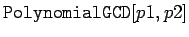
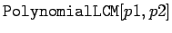
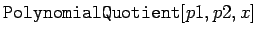
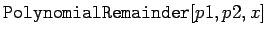
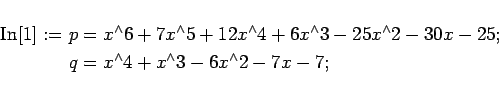
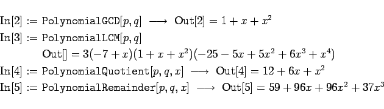
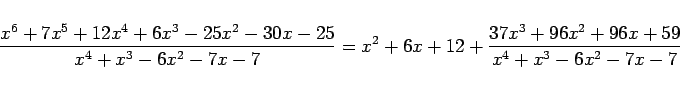

Inhalt Index DeskTop Bronstein

 Computeralgebrasysteme Anwendungen von Computeralgebrasystemen Manipulation algebraischer Ausdrücke Mathematica
Computeralgebrasysteme Anwendungen von Computeralgebrasystemen Manipulation algebraischer Ausdrücke Mathematica


Die folgende Tabelle enthält eine Auswahl von Operationen, mit denen sich Polynome über dem Körper der rationalen Zahlen algebraisch manipulieren lassen.
|  | bestimmt den größten gemeinsamen Teiler der beiden Polynome p1 und p2 |
|  | bestimmt das kleinste gemeinsame Vielfache der Polynome p1 und p2 |
|  | Division von p1 (als Funktion von x) durch p2 unter Fortlassung des Restes |
|  | Bestimmung des Restes bei der Division von p1 durch p2 |
| Beispiel |
|
Es werden zwei Polynome definiert: 


|